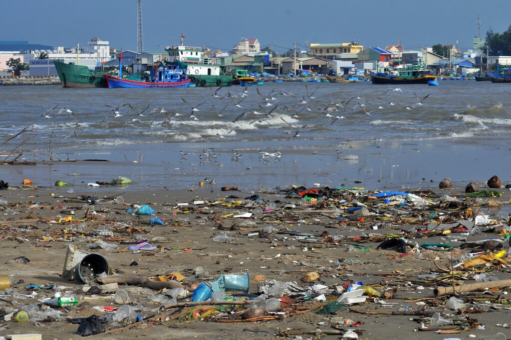
 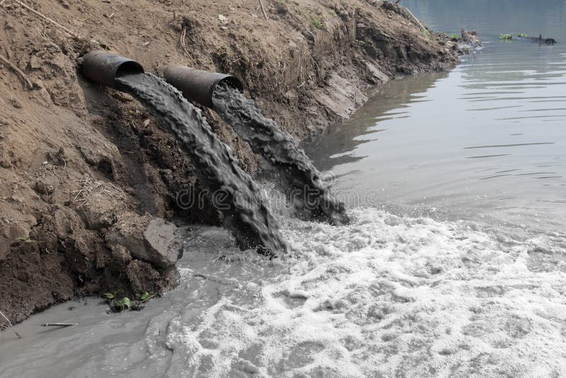
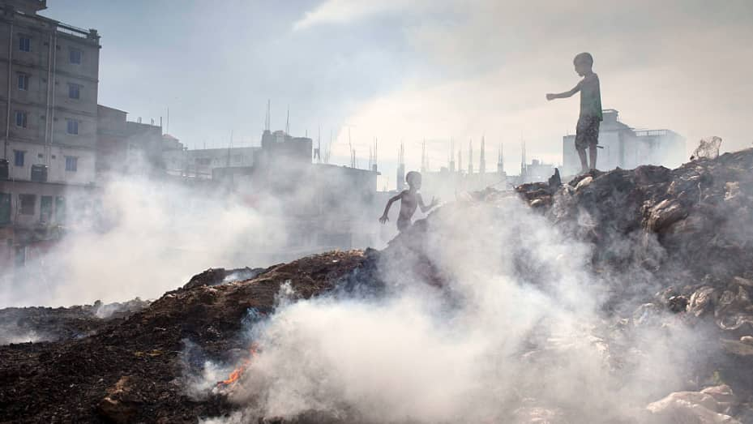
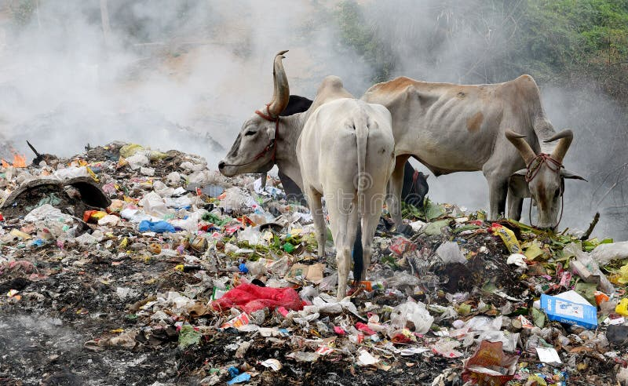
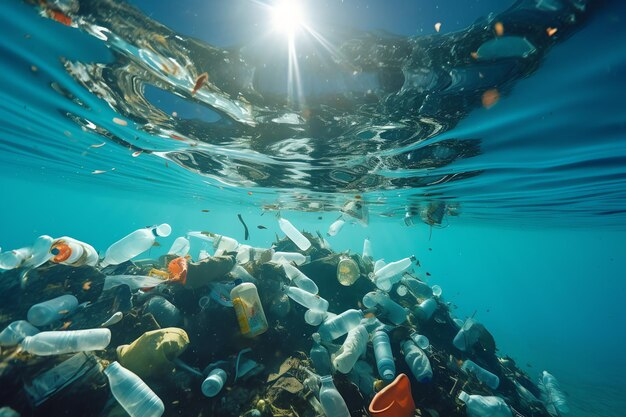
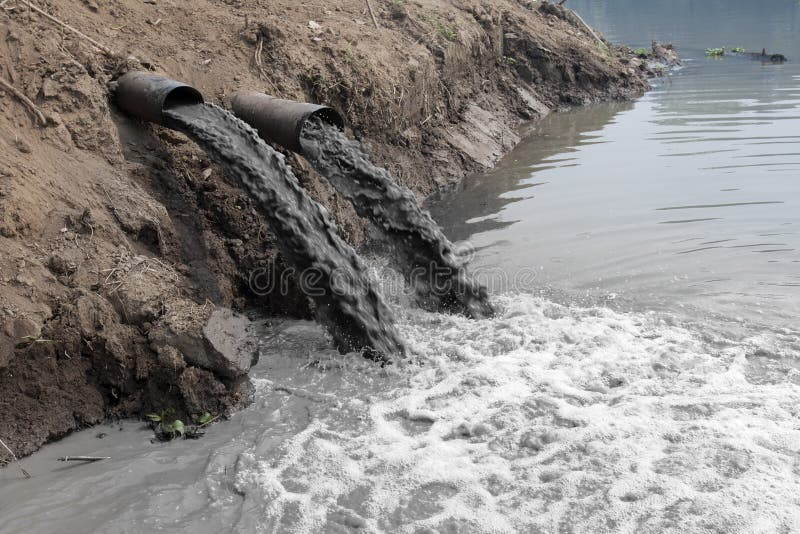
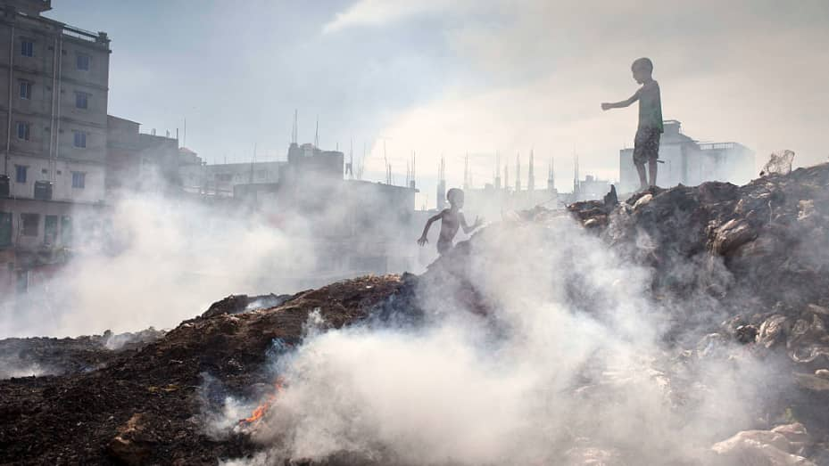
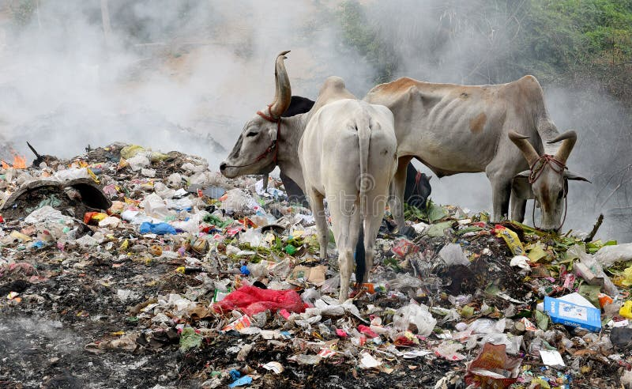
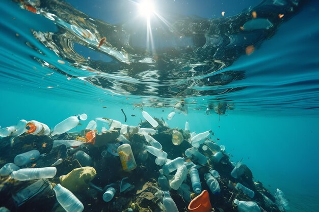
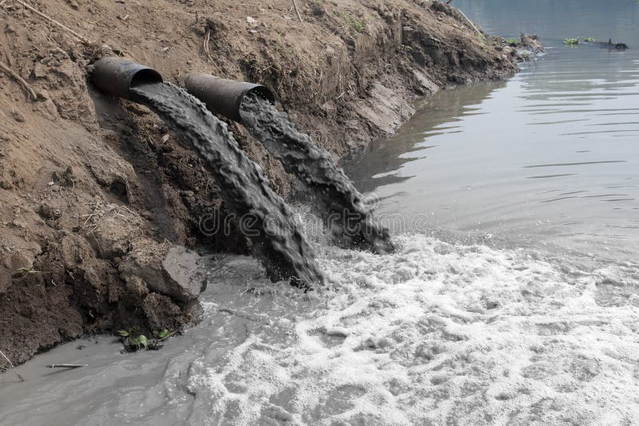
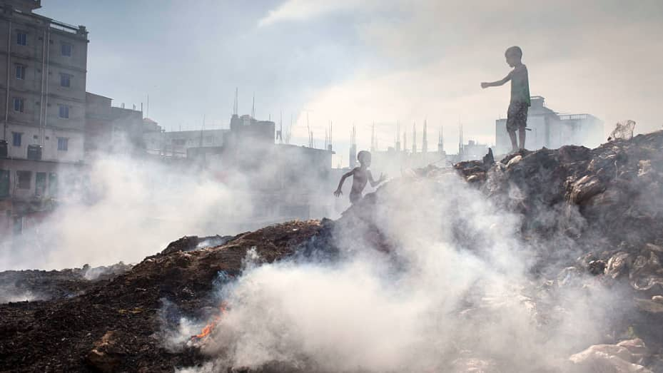
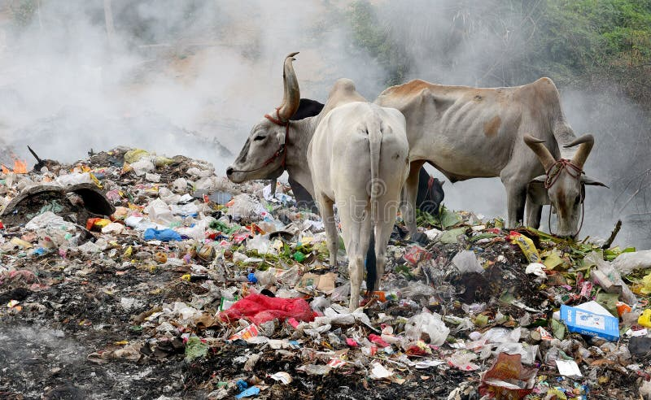
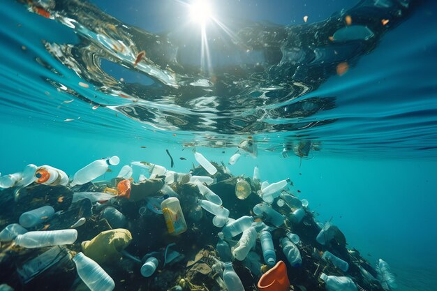
An Initiative towards a cleaner and healthier environment.
We get our pollution reports from the local people itself to be sure that the issue is genuine and make their voice reach the authorities.